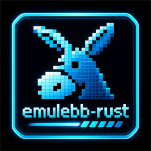

Run the client. Use your browser.
Search, watch transfers and manage monitored shared folders from the embedded browser operations console.

eMuleBBActive beta
eMuleBB Rust is a headless eD2K/Kad client for search, downloads, uploads, sharing and seeding. Use the packaged browser console or authenticated REST API.
What eMuleBB Rust does
Search, watch transfers and manage monitored shared folders from the embedded browser operations console.
Use authenticated requests, explicit responses and documented errors to connect your own scripts and tools.
Review interface choices, connection status and diagnostics. See the platform guide for exact package requirements and validation scope.
Choose your route
Repositories